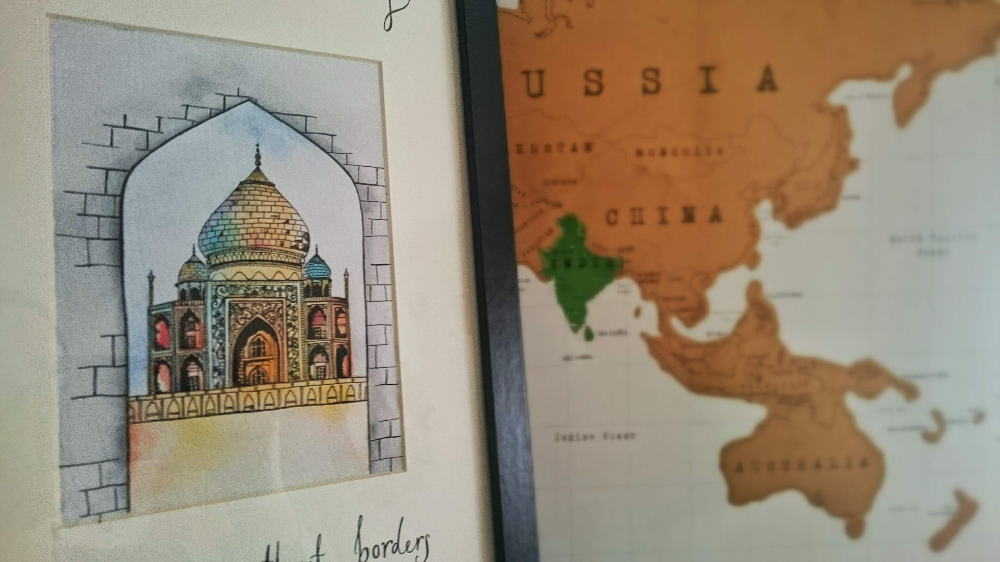
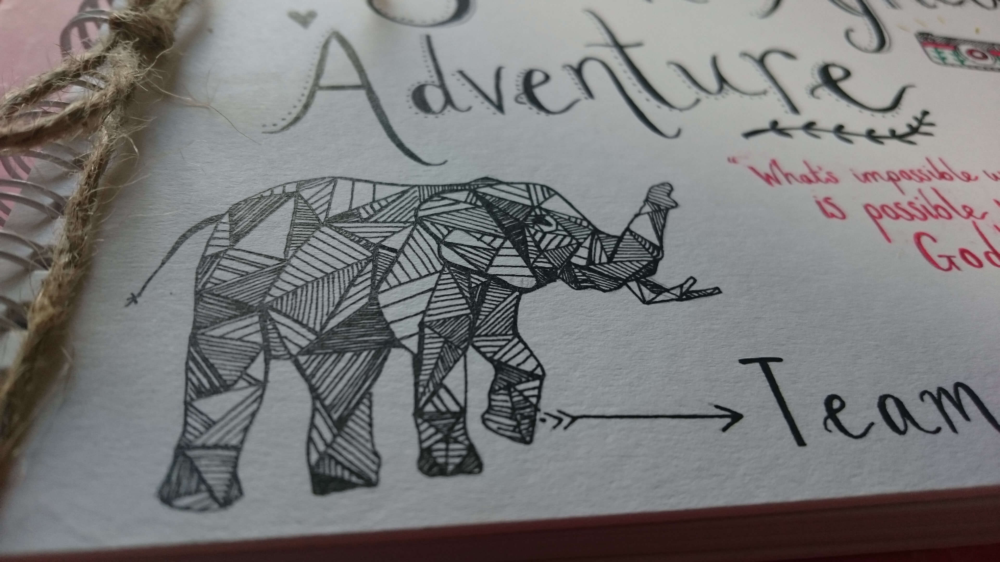
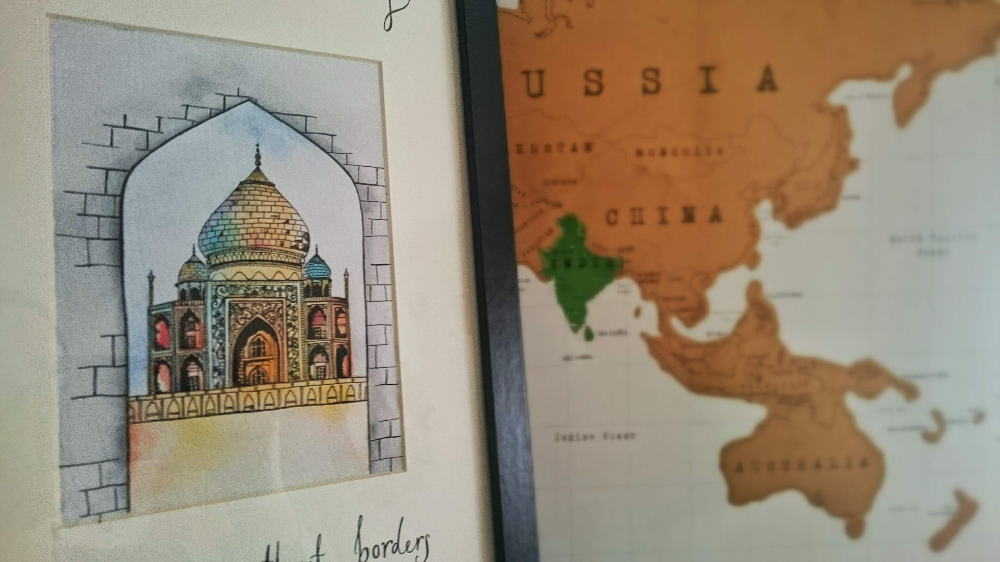
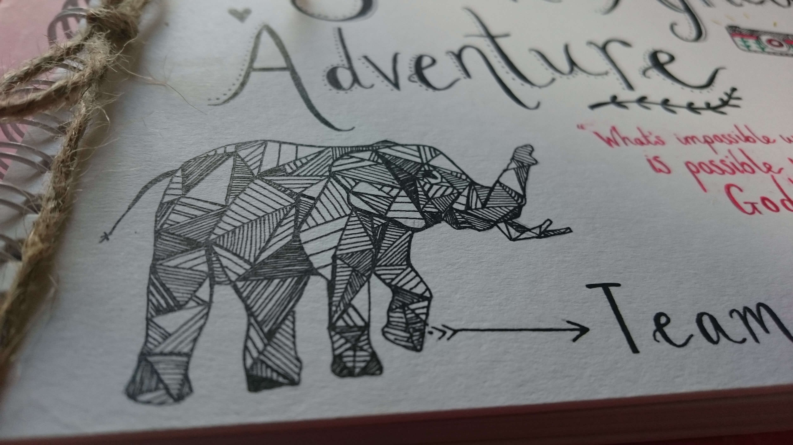

Side Projects
Here is what else get up to during the week when I'm not at #ixdbelfast; every new project is so exciting and helps me stay in touch with my crafty side. It's also nice to work with the rawness of pen and paper.
 





“Keep updated with my regular posts on social media and feel free to drop me a message if I can help you with anything.”